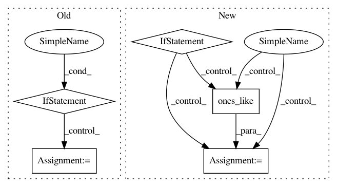

d4a2f656470e3190f8e877139455abcff1ad7cdb,rasa_core/policies/tf_utils.py,TimedNTM,__call__,#TimedNTM#Any#Any#Any#Any#,54
Before Change
tf.reduce_sum(powed_probs, 1, keepdims=True) + 1e-32)
// set probs for no intents and action_listens to zero
if ignore_mask is not None:
probs = tf.concat([tf.where(ignore_mask,
tf.zeros_like(probs[:, :-1]),
probs[:, :-1]),
probs[:, -1:]], 1)
return probs, next_scores_state
def _compute_time_attention(attention_mechanism, attn_inputs, attention_state,
After Change
scores[:, -1:]], 1)
next_scores_state = scores
if mask is not None:
// apply mask to scores
if self._shift_weight is not None:
// rearrange scores to make them continuous for convolution
scores = tf.map_fn(self._rearrange_fn,
[scores, mask], dtype=scores.dtype)
else:
scores = tf.where(mask > 0,
scores, -self._inf * tf.ones_like(scores))
// create probabilities for attention
if self._sparse_attention:
probs = tf.contrib.sparsemax.sparsemax(scores)
else:
probs = tf.nn.softmax(scores)
In pattern: SUPERPATTERN
Frequency: 3
Non-data size: 5
Instances
Project Name: RasaHQ/rasa
Commit Name: d4a2f656470e3190f8e877139455abcff1ad7cdb
Time: 2018-09-28
Author: mr.voov@gmail.com
File Name: rasa_core/policies/tf_utils.py
Class Name: TimedNTM
Method Name: __call__
Project Name: rail-berkeley/softlearning
Commit Name: cdf1e5890978ce2c487f3694dee26b9317592de2
Time: 2020-06-07
Author: kristian.hartikainen@gmail.com
File Name: softlearning/environments/adapters/dm_control_adapter.py
Class Name: DmControlAdapter
Method Name: __init__
Project Name: tensorflow/transform
Commit Name: 30146171032ed79ec99ff002ef8f7065c70d8536
Time: 2018-06-18
Author: tf-transform-dev@google.com
File Name: tensorflow_transform/analyzers.py
Class Name:
Method Name: mean